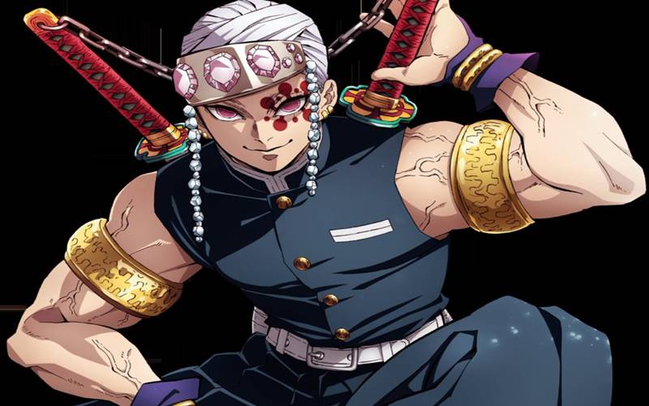
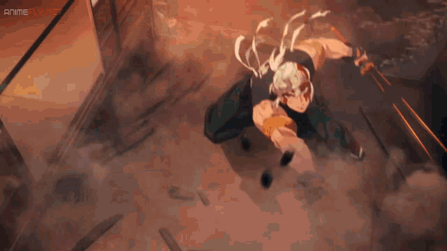
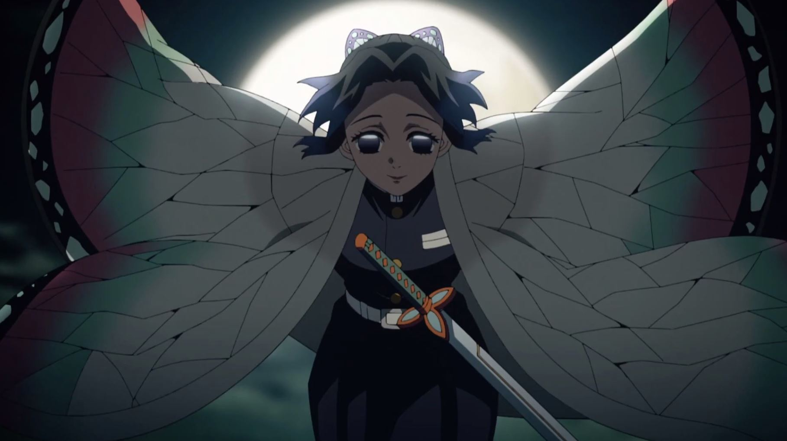
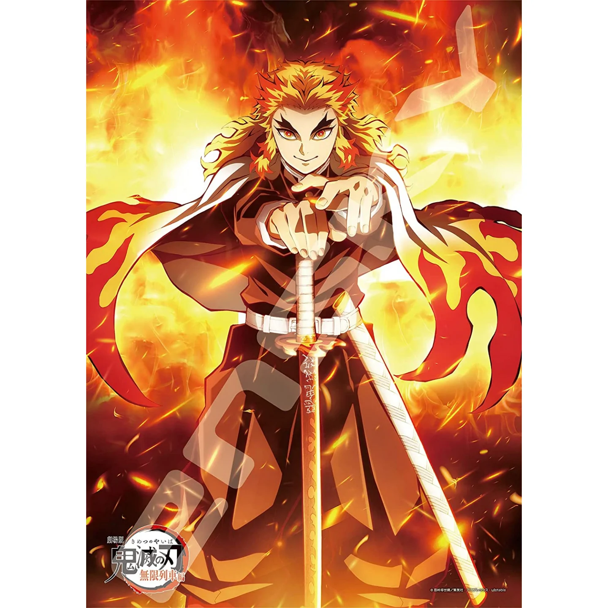

Tengen Uzui - THE SOUND PILLAR


He is the current Sound Hashira and uses the Sound Breathing.
Tengen is an eccentric and flashy individual, always wanting to be flamboyant, possessing a need for everything to be flashy and outstanding.
However, he also has a caring side that is masked under his flamboyant façade, one he only shows to those that are extremely close to him,especially his three wives.
He looks up to people like Kyojuro Rengoku. Having been raised as a Shinobi(Ninja), has greater tactical skills and sharper senses, especially his sense of hearing.
Tengen is the fastest runner out of all the Hashira, and thus possesses tremendous levels of raw speed and reflexes. He is also the second physically strongest Hashira.
His training as a Shinobi made him extremely pain tolerant and poison resistant, he also possesses great technical skill in weaponry such as kunai and explosives.
Tengen possesses an undaunted spirit and immense willpower, never faltering even when faced disadvantages and difficult circumstances.
Due to accumulating years of experience as both a ninja and Demon Slayer, Tengen has incredible judgement, making decisions on the fly.
Befitting Tengen's flamboyant personality, he carries an equally flamboyant set of weaponry. As his main weapons, he uses two gigantic Nichirin cleavers that are amber in color.
The blades are are held together at the hilt by a metal chain, making it very similar to nunchucks and are engreaved with the phrase Destroyer of Demons.
The amber-colored blade symbolises sound. Tengen doesn't use a sword sheath and instead carries them on his back, having them wrapped in cloth.
Shinobu Kocho - THE INSECT PILLAR


Kyōjurō Rengoku - THE FLAME PILLAR


Set your heart ablaze!!!